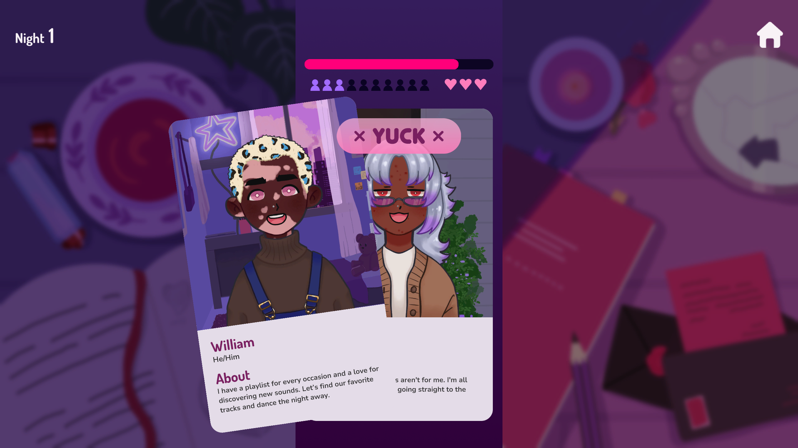
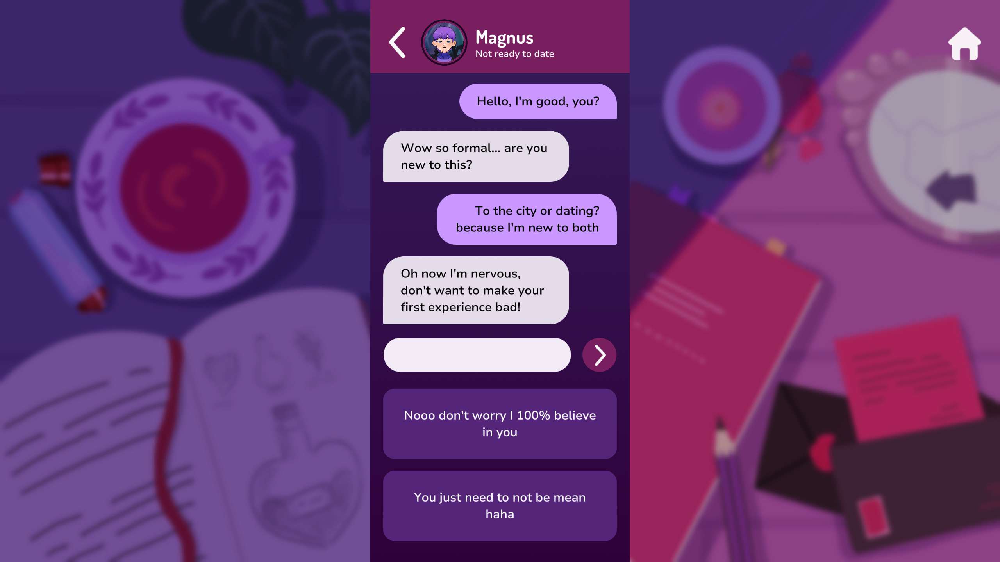
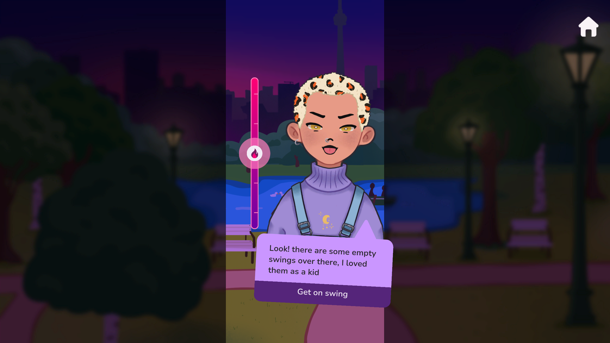

Love at
First Bite
Swipe, match, savor. A vampire dating sim where matching with humans is how you find dinner, and some profiles are hiding more than they let on.

Best on desktop · Play on itch.io ↗
The game
Love at First Bite is a dating sim built around narrative and investigation. You live the life of a vampire surviving through a dating app: swipe right on tasty humans, swipe left when a profile feels off, because some vampires are better at hiding than others. Matches are limited each day, and your thirst only grows while you decide on tonight's dinner.
Jam to production
The game started as our entry to the Indie Spain Jam 2023. The concept held up, so we took it through the PowerUp+ pre-incubation program and founded Honey Bun Games to build the full version, now heading to Steam.
Design highlights
- Deduction as the core verb · profiles are puzzles. Reading bios, photos and chat behaviour to unmask hidden vampires turns a swipe into a risk/reward decision.
- A pressure economy · limited daily matches and a growing thirst meter create a soft timer that forces commitment without hard fail states.
- Dates as minigames · conversations run on a tension bar: keep the date charmed, don't let suspicion peak.


